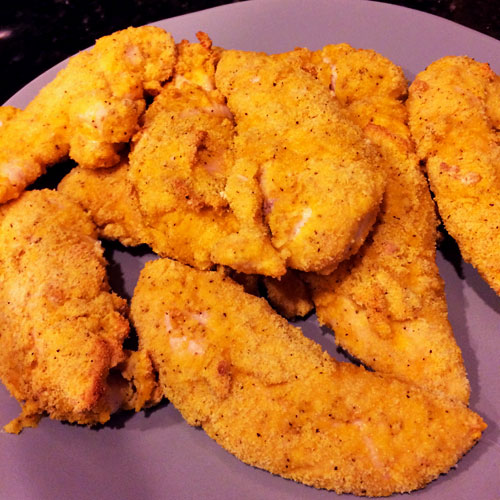
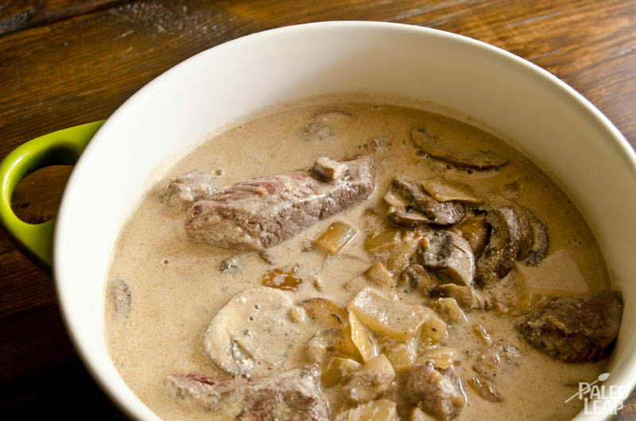
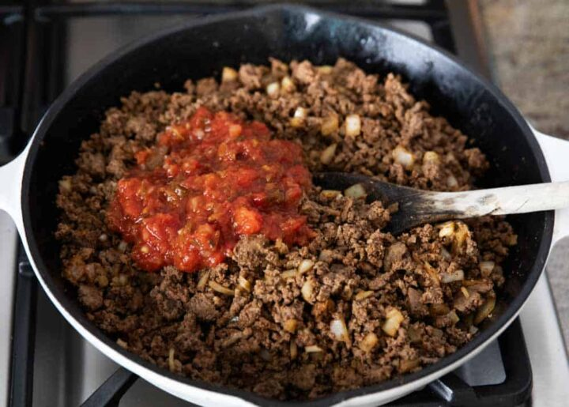

With a rainbow of colors, this dish is visually beautiful and it rivals any restaurant shrimp stack.
Spicy California Shrimp Stack
Ingredients
1 Cup cauliflower rice
1 Cup avocado, diced
1 Cup cucumber, peeled and diced
1 Cup cooked shrimp, peeled and deveined
1 Tablespoon sesame oil
1 Tablespoon Coconut Aminos
2 teaspoon spicy chili paste
1/3 Cup Paleo mayonnaise
Instructions
Cook cauliflower rice and sesame oil until tender and set aside.
In a small bowl, gently mash avocado until slightly chunky.
In a separate bowl, toss shrimp in Coconut Aminos to coat.
Mix mayonnaise with Sriracha sauce.
Using a one cup measuring scoop, layer 1/4 cup of cucumber, spread avocado, shrimp, and finished cauliflower rice. Gently press into cup.
Set a plate on top,then flip the measuring cup over. Lightly tap on the top to release.
Top each shrimp stack with spicy mayo, sesame seeds.

Breaded Chicken
What’s great about this recipe is that it’s versatile. You can change it to fit your own tastes by changing the spices.
Banana Egg Pancakes
Ingredients
1 1/2 lbs chicken breast tenders
1 cup almond flour
1 tbsp coconut flour
2 tsp salt
1 tsp black pepper
1/2 tsp coriander
1/4 tsp cumin
1/4 tsp turmeric
2 large eggs
Instructions
Preheat oven to 425°
Combine spices in a small dish until they are mixed
Add almond flour, coconut flour, and spices to medium mixing bowl
Stir until well combined
Add eggs to a small mixing bowl and whisk
Season chicken tenders with a little salt and pepper
Add chicken tenders to whisked eggs and move them around with your hands until they are all coated with the eggs
Line a baking sheet with parchment paper
Place wire rack the size of your pan on top of the parchment paper (this allows for a crispier crust on the chicken – if you don’t have a rack you can place the chicken directly on the parchment paper
Coat each tender one by one in the flour mixture until it is evenly, but lightly coated
Place each tender on the rack
Bake for 20 – 25 minutes until coating is golden brown (chicken should reach an internal temp of 165°
.

Beef Stroganoff
Beef Stroganoff is a traditional Russian dish usually prepared with beef, white wine, sour cream, mushrooms and onions. It doesn't require much to adapt the recipe to a healthy version.
Beef Stroganoff
Ingredients
1 lb top sirloin steak, cut into strips
6 tablespoons ghee
1 medium onion, chopped
8 oz mushrooms, sliced
2 cloves garlic, minced
1/4 cup dry white wine
1 cup beef stock
1 cup coconut milk
1 tbsp fresh parsley, finely chopped
Sea salt and freshly ground black pepper
Instructions
Heat a large skillet (preferably cast iron) over a medium-high heat and allow 2 tbsp of your cooking fat to melt. Add the beef strips and cook on each side for just one minute, until golden brown and then remove from the pan and set aside. Don’t be worried that the meat isn’t cooked through, as it will return to the heat to cook again later.
Repeat the above step, but this time cooking the mushrooms. They may require a minute or two longer, just enough time so that they begin to take a golden color. Once cooked, remove them from the skillet and set aside for later use.
This time, repeat the first step, but with the onions and garlic. More cooking time will be required, as the onions need to become tender.
Once the onions and garlic have cooked, leave them in the skillet and add the white wine. Cook for just a few minutes so that the alcohol burns off and the brown bits stuck to the bottom of the pan come up. At this point add the coconut milk and beef broth, stirring until a consistent creamy sauce takes shape.
Return the beef and mushrooms to the skillet and allow them to simmer slightly for 5 to 7 minutes. You may need to turn the temperature down to prevent the sauce from boiling. Also be sure to check the beef, as you do not want to overcook it and make it chewy.
Serve as is or on top of some spaghetti squash or zucchini noodles.

Beef Tacos
Tacos are the perfect dish to add some spice to you diet and their is a wide range of flavors you can add.
Beef Tacos
Ingredients
1 lb ground beef
1/2 cup salsa, I use Chi-Chi's mild salsa
1/2 onion, diced
1/8 teaspoon cayenne
1 tablespoon cumin
1 tablespoon chili powder
1/4 teaspoon paprika
pinch of red pepper flakes
1/2 teaspoon garlic salt
salt and pepper
1 tablespoon extra-virgin olive oil
NUCOS's coconut wraps
lettuce, shredded
tomatoes, diced
hot sauce
Instructions
Heat olive oil in skillet and saute onions.
Add beef and cayenne, cumin, chili, paprika, pepper flakes, and galric salt to skillet and fully cook beef.
Drain any liquid from beef and return to stove top. Add salasa and cook for another 5 minutes.
Spoon beef into a coconut wrap, add lettuce, tomato, and hot sauce.